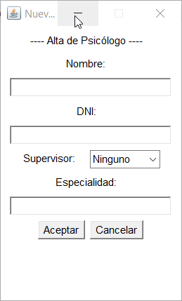

Para dar un psicólogo de alta, debemos pulsar en la opción 'Nuevo' que aparece en el menú Psicólogos. Al pulsar, se abrirá la siguiente ventana.
Debemos rellenar los campos con la información de cada psicólogo. El programa no permite que ningún espacio quede en blanco. Si intentamos dar de alta un psicólogo con algún campo vacío, aparecerá un mensaje de error y no se introducirá la información, con la excepción de seleccionar al supervisor; en este caso, podemos dejar el campo en blanco si el psicólogo no tiene ningún supervisor. Para que el psicólogo se dé de alta correctamente, debemos introducir la información en un formato adecuado. Para dar de alta un elemento pulsamos 'Aceptar' una vez los campos estén rellenos. Si pulsamos 'Cancelar', se borrará la información escrita en los campos. En caso de éxito en el alta o en caso de error, aparecerá un mensaje indicándolo.